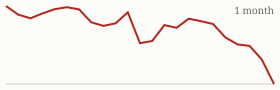
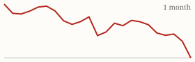

| Today's briefing for operators |
Top line: Mortgage costs near 2006 levels as stocks slide |
|
| Monday, November 23, 2026 | Late Edition | Curated from 63 voices on X |
|
Real Estate
Mortgage Costs Now Eat 39% of Household Income
The average American household spends 39% of gross income on mortgage costs, near 2006 bubble levels and similar to the late 1980s, Nick Gerli reports. He says that's the main reason homebuyer demand is so low and keeps falling.
By @nickgerli1 |
Chart of mortgage costs as a share of household income. Image via @nickgerli1 on X |
Gerli's point is that this is mostly an affordability problem, not a lack of interested buyers. When payments take that big a share of income, fewer households can qualify or want to stretch, so retail demand keeps shrinking. |
He also asked his followers what a prolonged stock market correction would do to housing. That's no longer hypothetical: the S&P 500 fell 3.7% and the Nasdaq 5.3% on Friday. For buyers and sellers, payment math and pricing discipline matter more than ever. |
|
| Read on X |
|
Mortgage Rates & Markets |
Mortgage Rates Today's average lender rates | 30-year fixed | 7.33% | -0.12 | | 15-year fixed | 6.89% | -0.10 |
Daily change vs. prior day. Source: Mortgage News Daily, as of 11/20/2026 (updated weekdays about 4 PM ET). |
|
S&P 500 Close of Fri, Nov 20 (markets closed since; last close shown) S&P 500 6,910.39 ▼ -265.44 (-3.70%)  Yahoo Finance chart data (daily closes) |
|
Nasdaq Composite Close of Fri, Nov 20 (markets closed since; last close shown) Nasdaq Composite 22,617.73 ▼ -1,261.47 (-5.28%)  Yahoo Finance chart data (daily closes) |
|
|
Real Estate & Deals |
$0 Marketing, $400K-$500K a Month By @NickMaccini Nick Maccini says the biggest wholesaling and flipping company in his market does roughly $400K-$500K in revenue per month organically, from relationships alone. His point: relationships can beat a big marketing budget. Read on X |
An Honest Look at a So-So Flip By @Jacob_Naviaux Naviaux sold for $265K net after $10K in closing costs and netted $21K on a $53K rehab. The slow market meant 41 days to get under contract and 137 days from purchase to sale. A good reminder to budget for slower exits. Read on X |
BiggerPockets graphic on Berkshire's homebuilder investment. Image via @BiggerPockets on X Buffett Bets $600M on a Homebuilder By @BiggerPockets Berkshire Hathaway just put $600M into a homebuilder while builder confidence sits at a 14-year low. BiggerPockets breaks down the bigger housing bet behind the headline and what investors can take from it. Read on X |
A Handshake Isn't a Contract By @NickMaccini Maccini agreed on price and shook hands with a seller who still wants his attorney to review the agreement. In his experience, deals like that turn into signed contracts only about 50% of the time. Read on X |
|
AI Briefing |
OpenAI Cracks Down on Model Copying By @OpenAI OpenAI shared new research on "distillation," where others copy a model's abilities without its safeguards, and on how it detects and disrupts coordinated attempts to do it. Read on X |
Google Recaps Two Weeks of Launches By @GoogleAI Google's roundup leads with Gemini 4 Neon, its newest model, built for fast end-to-end work on software, knowledge work and science tasks, plus Gemini 4 Hydrogen. Read on X |
Perplexity Computer browser extension demo. Image via @perplexity_ai on X Perplexity Computer Moves Into Your Browser By @perplexity_ai Perplexity's agent now works directly in Chromium browsers through its extension. You hand off a task from the side panel and watch it work across your tabs and tools. Read on X |
Don't Build Yourself an AI Yes-Man By @PeterDiamandis Diamandis: if your AI thinks every idea is brilliant, you've built a yes-man. Ask it for the weakest assumption in your plan, the missing evidence and why a customer might refuse to buy. Read on X |
Run a Premortem Before You Decide By @Sabrina_Ramonov Sabrina Ramonov's first decision prompt: paste your plan into ChatGPT or Claude and ask for a premortem, so it shows what could go wrong and your blind spots before you commit. Read on X |
The Skeptic's Case: An AI Bubble By @coleruudjohnson Cole Ruud Johnson says most people use AI as a slightly better Google, and for most business owners it's a distraction. He knows few people actually making more money from it. A useful check: is your AI work tied to revenue? Read on X |
|
Business & Leadership |
Easy Only Until You Try It By @AlexHormozi Alex Hormozi: anything that looks easy only looks easy because you haven't done it yet. No one is more confident than the ignorant. Read on X |
Grinding Has a Shelf Life By @loganjrankin Logan Rankin says grinding is great early but doesn't last. He now spends 98% of his time on what he wants to do, with presidents running his companies. Read on X |
Your Heroes Aren't Smarter Than You By @danmartell Dan Martell says his life changed the day he met his heroes and realized they weren't smarter than him. Read on X |
Ship the Awkward First Version By @PeterDiamandis Diamandis asks how many ideas you've abandoned to avoid showing a rough first draft. The embarrassment you expect is usually far bigger than the reality, because everyone else is busy with their own unfinished work. Read on X |
|
The Hyre Times is compiled each morning by Groky from public posts on X plus public rate and market data. Summaries reflect the authors' own claims and have not been independently verified. Not financial advice. © 2026 Hyre Times. |